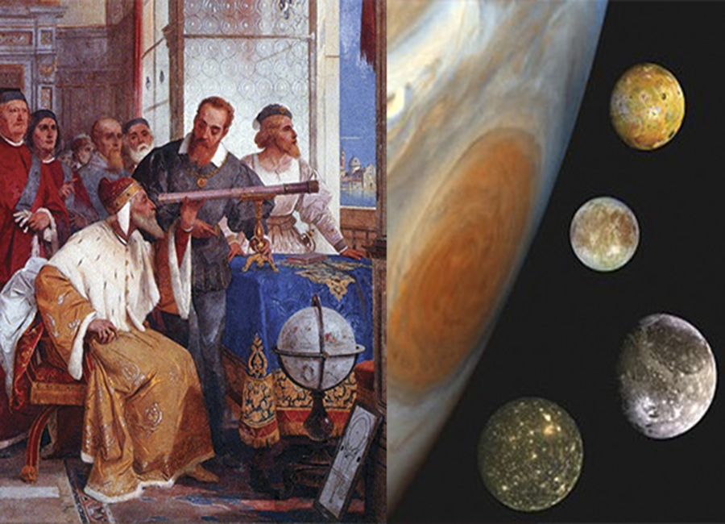
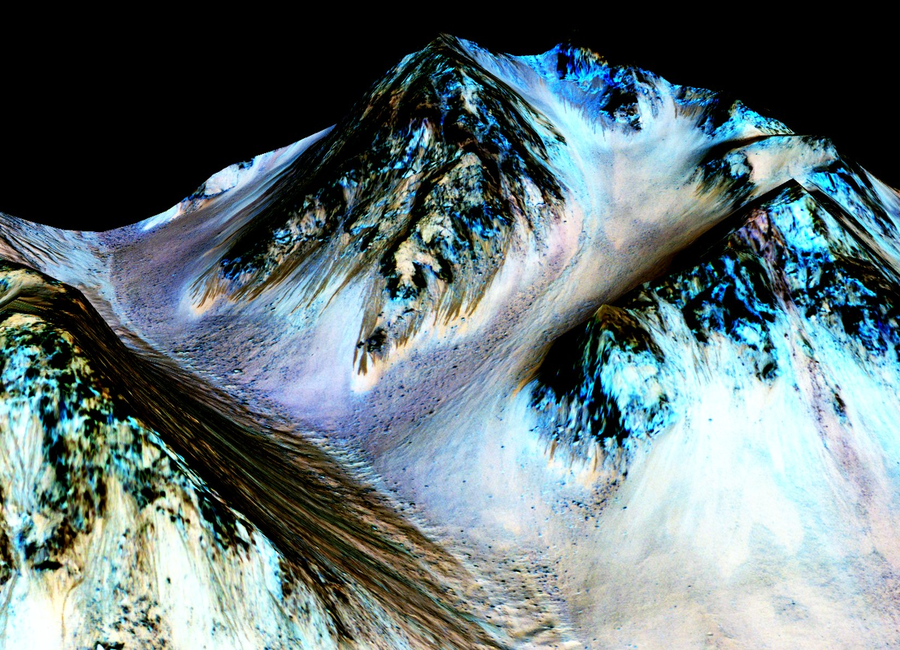
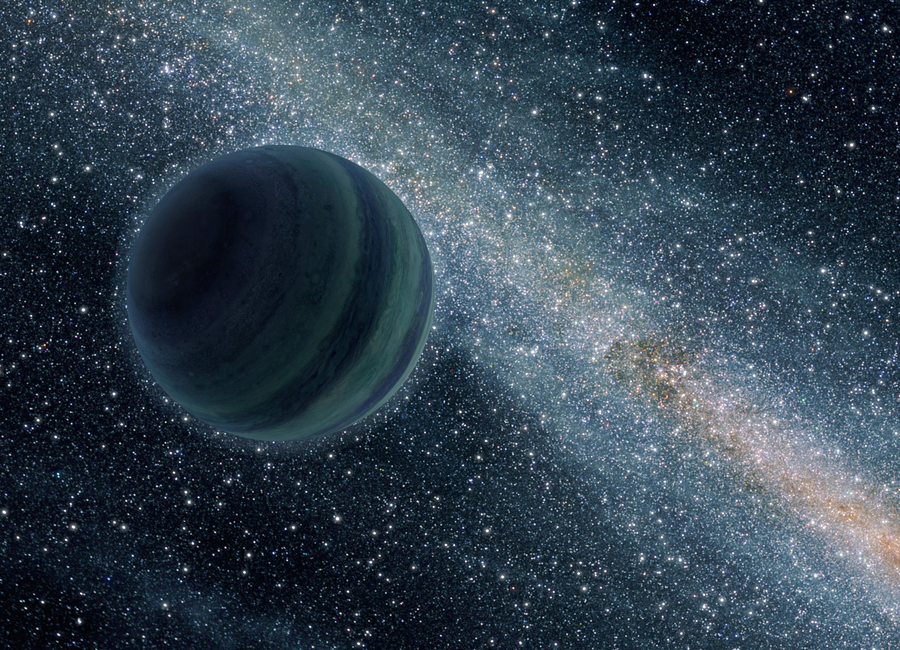
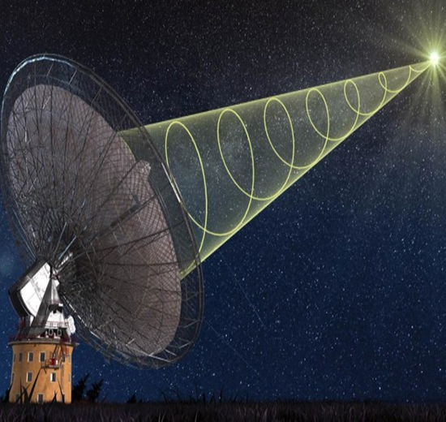
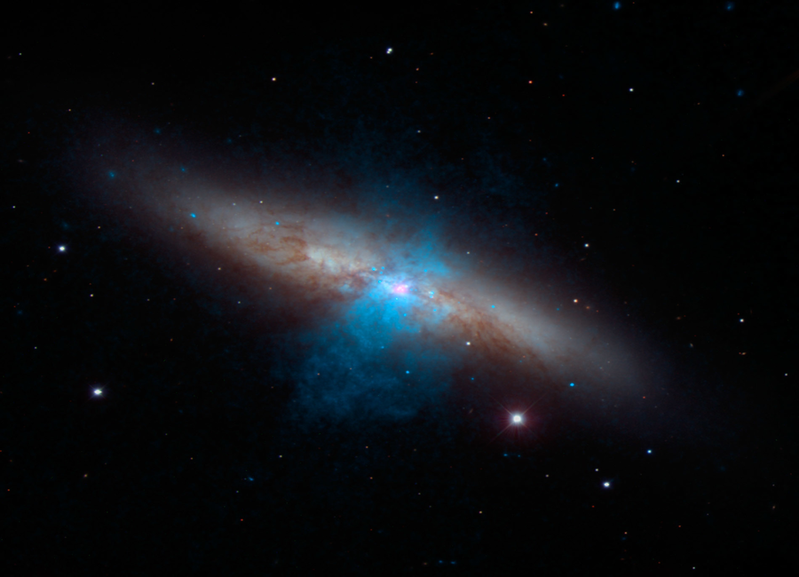
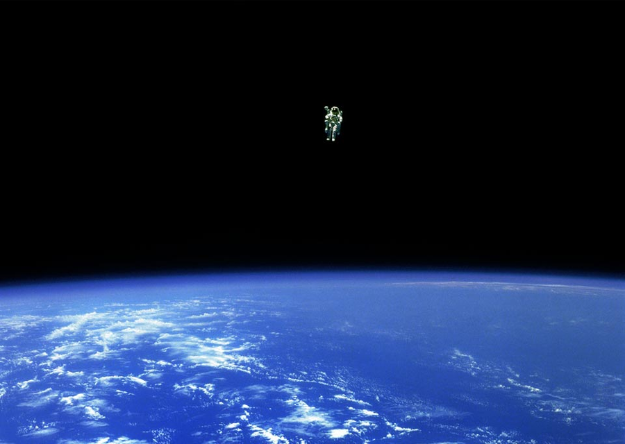
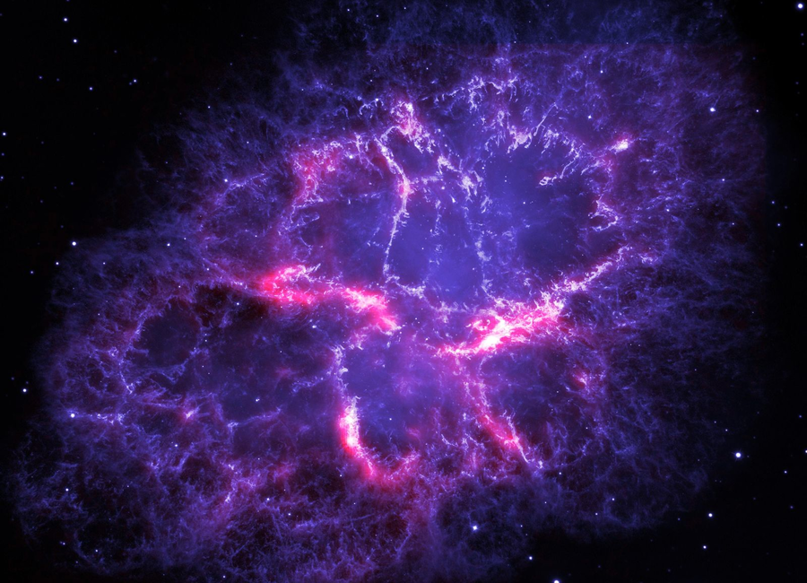
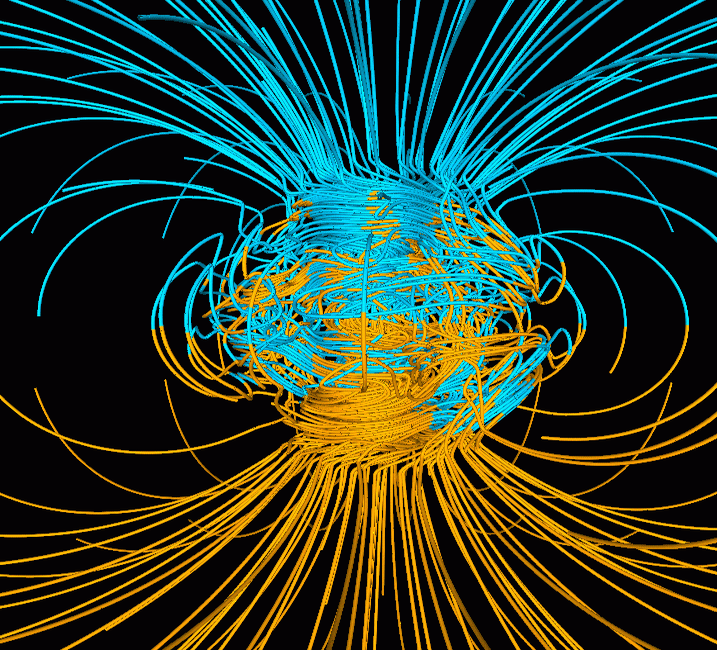

|  |
 |
Galileo and the Moons of Jupiter
Following the invention of the telescope, Galileo Galilei made one for himself and discovered the moons of Jupiter. For the first time, it was shown that other planets could have their own orbiting moons and the discovery established the telescope as a very important tool for astronomers. |
Water on Mars?
Ever since other planets were discovered in our solar system, humans have wondered: can these other worlds carry life? For us, water means life, and when astronomer Percival Lowell believed he'd found evidence of water on mars, it was believed this could mean there were living beings there! Though we know now that's not the case, the discovery the Mars indeed does have water (mostly in the form of ice) and the evidence that it was once there in abundance makes us hopeful that we may find evidence of past life there. |

|

|
Geological Activity: Active and Dead Worlds
What makes a celestial body geologically alive? What makes one dead? What are the differences in alive and dead worlds, and what can they mean for the sustainability of life and for conditions on that planet? |
Radio Waves
Although radio waves are used to transmit sound, they are not actually something you can hear or see. What are radio waves, and why are they so important? How are they used, and what other types of waves are there? Could radio waves help us to communicate with other beings or find other worlds? |
|  |
 | |
Spectroscopy
Spectroscopy allows us to "read" starlight in order find out details about a star--it's chemical composition, temperature, and motion through space. Spectroscopy splits the light into individual wavelengths. What kinds of information is contained in these wavelengths, what do they reveal about the universe, and how are they interpreted? |
Gravity
Though known as the weakest force in nature, gravity is responsible for holding the fabric of our galaxies and universes together. Without it, nothing would exist as we know it--certainly life dependant on a sun could not have come to be! Gravity effects everything around us. We even have gravitational attraction to one another. |
|  |
 |
SupernovaWhen a star dies, it does so in a breathtaking, beautiful, and powerful explosion of force. It can destroy everything around it, but it can also expel elements necessary for the creation of new stars, and are the only way natural elements heavier than lead such as gold and platinum can be formed. Even in the daytime it is possible to see the light in the sky caused by a supernova, and their are tales throughout history of these occurences--the last one being in 1604! How are supernova studied, and what can they tell us about far off galaxies? |
Magnetic WavesThe presence of a magnetic field relies on two things: a rotating body and a hot, liquid core capable of conducting electricty. However, we still don't know everything about magnetic fields nor about how these cores are formed. We also don't know why some dead worlds, such as Earth's moon, have some magnetic patches. Why are magnetic fields important and how are they affected by the sun? |